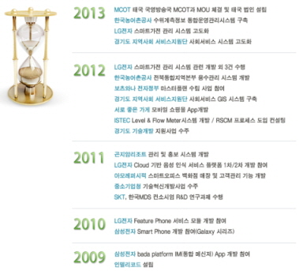

인텔리코드 소개
CEO MESSAGE
1985년 MIT 미디어 랩을 만든, 니콜라스 네그로폰테 교수는 원자의 세계에 대비하여 비트의 세계를 얘기했습니다. 인간이 바라보는 세상은 이미 원자(Atoms)와 비트(Bits)로 이루어져 있다 해도 과언이 아닙니다. 네그로폰테 교수는 1993년과 1998년 사이에 쓴 칼럼에서 "Move bits, not atoms" 라는 주제를 강조하고 있습니다. 과거에 원자와 에너지의 형태로 우리의 오감을 통해 들어 오던 정보가 이제는 많은 부분이 비트의 형태로 들어 오고 있습니다. 영화 매트릭스에서처럼 이제 원자의 세계와 비트의 세계는 우리의 지각 속에서 경계가 모호해 지고 있습니다. 원래 물질과 정보는 같은 것인지도 모르겠습니다. 과거의 과학과 공학이 원자의 세계를 잘 인식하고, 잘 해석하고, 잘 처리하고, 잘 예측하기 위해 발전해 왔다면 이제 정보에 대해서 그런 것들이 한 축을 이룰 것입니다. 이런 분야를 Data Science라고 부르고 있습니다. 인텔리코드 M2M, Cloud Computing, Data Mining 분야의 소프트웨어 회사입니다. M2M과 Cloud Computing은 Data Mining을 위한 기술 요소입니다. Data Mining은 필요한 데이터의 수집과 그것을 통해 가치 있는 정보를 획득하는 것입니다. 인텔리코드는 고객에게 풍부한 정보의 환경을 제공하고 정확한 정보를 볼 수 있도록 정보의 전망대를 제공하겠습니다. 감사합니다.
HISTORY
오시는길